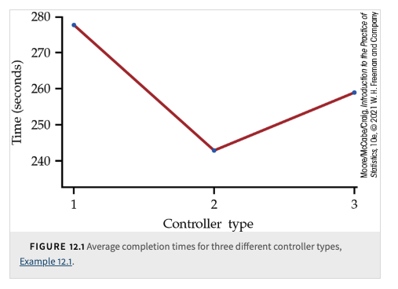
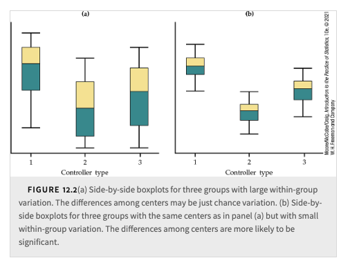
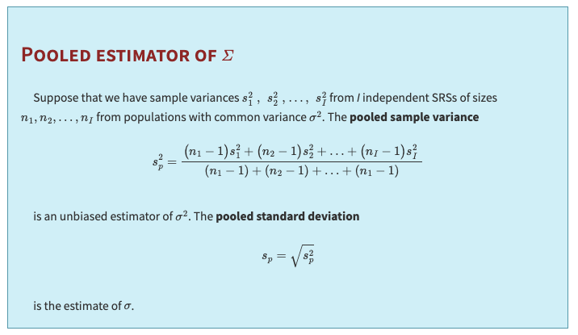
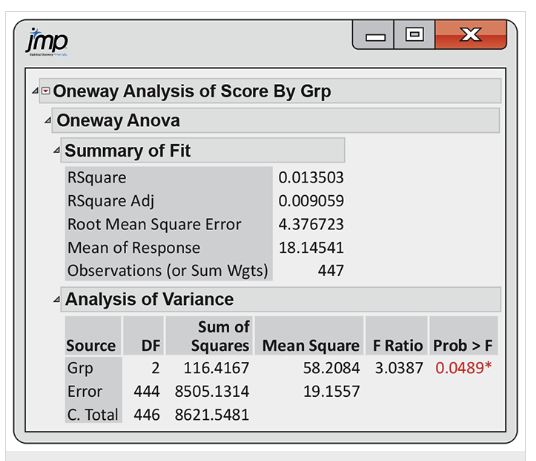

8. One-Way ANOVA#
Textbook reference
This chapter corresponds to Chapter 12 of Introduction to the Practice of Statistics (Moore, McCabe & Craig, 10th ed.). Note that the course chapter numbers (shown in the sidebar) follow our teaching order, which differs from the textbook order.
Learning objectives
After this chapter, you will be able to:
Explain why running many two-sample t tests inflates the chance of a false positive (the familywise error rate), and compute that rate for a given number of tests.
State the one-way ANOVA model, hypotheses, and assumptions, and check the 2:1 rule for standard deviations.
Decompose total variation into between-group (\(SSG\)) and within-group (\(SSE\)) pieces, and build the ANOVA table (df, SS, MS).
Compute and interpret the F statistic and its P-value, plus \(R^2\) and the pooled estimate \(s_p\).
Read software ANOVA output (e.g., JMP) and state a conclusion in context.
Explain why a significant F test must be followed by adjusted multiple comparisons (or planned contrasts), not unadjusted pairwise t tests.
Key concepts at a glance
Why not many two-sample tests? · The ANOVA idea and the F test · Reading figures and ANOVA output · Which means differ? Follow-up analyses · Putting it all together
Where are we? A question before we start
Chapter 7 gave us a complete toolkit for comparing the means of two populations. Now a nutrition researcher hands you three diets — A, B, and C — and asks the natural question: do the diets differ in average weight loss? Your first instinct is probably to reuse the tool you have: test A vs. B, then A vs. C, then B vs. C. Three familiar two-sample tests — what could go wrong? Quite a lot, it turns out: even if the diets are truly identical, running three tests at \(\alpha = 0.05\) pushes the chance of at least one false positive to about 14.3% (the example below does the arithmetic, and with 10 diets it climbs to about 90%). This chapter builds the fix: one single test — the ANOVA F test — that asks “are the means all equal?” while keeping the error rate at 5%.
In the previous chapter (Chapter 7), we learned the statistical procedure for comparing the means of two populations. Naturally, the next step is to consider what to do when there are more than two populations. For example, suppose we have three diets—Diet A, Diet B, and Diet C—administered to three independent groups drawn from different populations. The study then measures a response variable to determine whether at least one group mean differs statistically significantly from the others.
One approach is to use the two-sample procedure and perform multiple pairwise tests between the groups. In the case of three groups, this involves testing the following pairs: (Diet A, Diet B), (Diet B, Diet C), and (Diet A, Diet C). However, from our understanding of probability, each test carries a risk of a Type I error, and these errors can compound when multiple tests are conducted.
Example: The Risk of Multiple Two-Sample Tests
Consider a scenario where a researcher wants to compare the effectiveness of three different diets on weight loss. The three groups are:
Diet A
Diet B
Diet C
If the researcher were to perform independent two-sample t-tests, the following comparisons might be made:
Diet A vs. Diet B
Diet A vs. Diet C
Diet B vs. Diet C
Assume that in reality there is no true difference among the diets—any observed difference is due solely to random chance. Each individual t-test is typically conducted at a 5% significance level (i.e., \(\alpha = 0.05\)). This means that for each test, there is a 5% chance of incorrectly rejecting the null hypothesis (committing a Type I error).
However, when performing three separate tests, the probability of making at least one Type I error increases. The overall chance (also known as the familywise error rate) of a false positive can be approximated by:
For three tests at \(\alpha = 0.05\), this calculation becomes:
This means that even if there is no actual effect, there is roughly a 14% chance that at least one of the three comparisons will incorrectly appear significant purely by chance.
In contrast, a one-way ANOVA tests the null hypothesis that all group means are equal in a single overall test. This approach controls the Type I error rate at the desired level (e.g., 5%), rather than inflating it as with multiple two-sample tests. Therefore, when comparing three or more groups, one-way ANOVA provides a more reliable method of analysis.
Familywise Error Rate with 10 Diets
When comparing 10 diets, if we were to perform all possible pairwise two-sample tests, the number of comparisons would be:
Assuming each test is conducted at a 5% significance level (i.e., \(\alpha = 0.05\)) and the tests are independent, the probability of not making a Type I error in a single test is \(0.95\). For 45 tests, the probability of making no Type I errors is approximately:
Thus, the familywise error rate—the probability of making at least one Type I error across all tests—is:
Using a calculator, we find that:
so the familywise error rate is approximately:
This very high error rate illustrates why performing multiple two-sample tests without adjustment can lead to a substantial increase in the probability of obtaining false positives.
Knowing that performing multiple two-sample tests has an inherent drawback—namely, the compounded risk of Type I errors—we must pursue another approach to answer the question of whether the group means are not all equal (i.e., at least two means differ).
Recall from our study of sampling distributions that the sample mean, \(\bar{X}\), is a random variable whose variability is influenced by both the sample size \(n\) and the population standard deviation \(\sigma\). Even when drawing different samples from the same population, this inherent variability persists. In our scenario, we suspect that different groups are drawn from populations with different means (while sharing a common standard deviation). This introduces an extra layer of variability among the sample means.
To rigorously examine this question, we need a statistical procedure that formally studies the variation among multiple group means. This leads us to One-way ANOVA (Analysis of Variance). One-way ANOVA is a method used to determine whether there are any statistically significant differences among the means of three or more independent groups. Hence, we will also form a pair of hypotheses and calculate a pivotal quantity (test statistic) to run a hypothesis test to determine whether we have evidence from our dataset to reject \(H_0\). The hypotheses are as follows:
The null hypothesis in one-way ANOVA is that all group means are equal:
The alternative hypothesis is \(H_a\): not all of the \(\mu_i\) are equal (i.e., at least two of the means differ).
The F-statistic is then compared against a critical value from the F-distribution (taking into account the degrees of freedom) to decide whether to reject the null hypothesis.
Common misunderstanding
Students often think: “The F test came out significant, so all of the group means are different from each other.”
In fact: rejecting \(H_0: \mu_1 = \mu_2 = \dots = \mu_I\) only supports \(H_a\): not all of the means are equal — i.e., at least two differ. It is entirely possible (and common) that one group stands apart while the others are indistinguishable.
Quick check: with three diets, suppose \(\mu_A = \mu_B\) exactly but \(\mu_C\) is much larger. Is \(H_0\) false? (Yes — so a significant F is expected. Do all three means differ? No — only the pairs involving C.) Which pairs differ is a separate question, answered by the follow-up procedures at the end of this chapter.
8.1. Inference for One-way ANOVA#
A question before this section
Suppose the three diet groups really do have different population means. Where in the data would that evidence live? Each group’s sample mean would drift toward its own \(\mu_i\), so the group means would spread apart — but sample means always differ somewhat, just by sampling variability. The trick is to compare two spreads: the spread between the group means against the spread within each group (the natural person-to-person noise). If the between-spread is large relative to the within-spread, chance alone is a poor explanation. Making that comparison precise is exactly what “analysis of variance” means.
To concretely see how we decompose the variation of the data points in our group that leads to the variation in the sample mean (or group mean), it is best to start with a statistical model and make some assumptions. For example, consider the one-way ANOVA model:
Bridge: from two spreads to one number
A hypothesis test needs a single test statistic with a known distribution under \(H_0\) — we cannot hand the F table two separate spreads. So the plan of the three tabs below is: (1) write down the model that defines “between” (the \(\mu_i\)’s) and “within” (the \(\epsilon_{ij}\)’s); (2) decompose the total variation into a between-group piece and a within-group piece; (3) turn their ratio into one number, the F statistic, whose value near 1 means “nothing but noise” and whose large values signal real differences among the means.
The ANOVA model is expressed as:
where:
\(x_{ij}\) is the \(j\)th observation from the \(i\)th group,
\(\mu_i\) is the true (population) mean for group \(i\) — this is the systematic component (the “FIT”),
\(\epsilon_{ij}\) is the random error term — this represents the residual variation (the “RESIDUAL”).
One-way ANOVA relies on several assumptions:
Normality: The data within each group should be approximately normally distributed.
Homogeneity of Variance: The variances in different groups should be similar.
Independence: The observations must be independent of each other.
The \(\epsilon_{ij}\) are assumed to be from an \(\mathcal{N}(0, \sigma)\).
Why Assume a Common Standard Deviation?
Because sample means naturally vary due to sampling variability (which depends on both the sample size \(n\) and the underlying population standard deviation \(\sigma\)), one must assume that the populations all have the same standard deviation. This assumption, known as homogeneity of variance, is crucial. If each group had a different \(\sigma\), then the variation in the sample means would reflect not only differences in the true group means but also differences in the precision of those estimates, making it difficult to compare groups fairly.
Note
Rule for Examining Standard Deviations in ANOVA
If the largest sample standard deviation is less than twice the smallest sample standard deviation, we can use methods based on the assumption of equal standard deviations, and our results will still be approximately correct.
The idea behind ANOVA is that the total variation in the data can be divided into two main parts:
Between-Group Variation: Variation due to differences among the group means \(\mu_i\).
Within-Group Variation: Variation due to the random errors \(\epsilon_{ij}\) (i.e., variability within each group).
Mathematically, the total variation (often measured as the Total Sum of Squares, \(SS_{Total}\)) is given by:
where \(\bar{x}_{\cdot\cdot}\) is the overall (grand) mean of all observations.
This total variation is partitioned as follows:
In the textbook:
where:
Between-Group Sum of Squares (\(SS_{Between}\)):
\[ SS_{Between} = \sum_{i=1}^{I} n_i \left(\bar{x}_{i} - \bar{x}_{\cdot\cdot}\right)^2. \]This term measures how much the group means \(\bar{x}_{i}\) differ from the overall mean. It captures the systematic differences among the groups — the variation that can be attributed to the different treatments or conditions (reflected by the \(\mu_i\)’s).
Within-Group Sum of Squares (\(SS_{Within}\)):
\[ SS_{Within} = \sum_{i=1}^{I} \sum_{j=1}^{n_i} \left(x_{ij} - \bar{x}_{i}\right)^2. \]This term measures the variability of the observations around their respective group means, reflecting the random error \(\epsilon_{ij}\). The differences \(e_{ij} = x_{ij} - \bar{x}_{i}\) — the deviations of each observation from its group mean — are the residuals and correspond to the \(\epsilon_{ij}\) in the statistical model \(x_{ij} = \mu_i + \epsilon_{ij}\).
The total variation (or \(SS_{Total}\)) measures the overall spread of the individual data points around the grand mean. It tells us how much the data vary in total — a combination of:
Systematic differences among groups (if the \(\mu_i\)’s are very different, \(SS_{Between}\) is large), and
Random fluctuations within each group (if the \(\epsilon_{ij}\)’s are large, \(SS_{Within}\) is large).
These two sources of variation are independent.
The ratio of the between-group variability to the within-group variability is computed to form the F-statistic:
(MSB is also called MSG, the mean square for groups; MSW is also called MSE, the mean square for error — the notation used in the textbook figures and later in this chapter.)
A high F-value indicates that the variability between the groups is large compared to the variability within the groups. This suggests that at least one group mean is significantly different from the others.
An F-value close to 1 indicates that the between-group variability is similar to the within-group variability, suggesting no significant differences among the group means.
Mean Square Between (MSB):
\[ MSB = \frac{SS_{Between}}{I - 1}, \]Mean Square Within (MSW):
\[ MSW = \frac{SS_{Within}}{N - I}, \]where \(N\) is the total number of observations across all groups.
Under the Null Hypothesis: The expected value of MSW is the common error variance \(\sigma^2\) whether or not \(H_0\) is true. The expected value of MSB, however, equals \(\sigma^2\) only if the null hypothesis (that all group means are equal) is true; otherwise it exceeds \(\sigma^2\). Thus, under \(H_0: \mathbb{E}\left(\frac{MSB}{MSW}\right) \approx 1\). This asymmetry is exactly why an F-statistic substantially greater than 1 signals differences among the group means.
A significantly larger F value suggests that the group means differ more than would be expected by chance, prompting rejection of the null hypothesis.
Example: three dice and the logic of F
Three dice are claimed to be identical fair dice. You suspect one is loaded toward 6. Roll each die 6 times:
Die A: 6, 5, 6, 4, 6, 3 — group mean \(\bar{x}_A = 5.0\)
Die B: 2, 4, 3, 5, 1, 6 — group mean \(\bar{x}_B = 3.5\)
Die C: 3, 2, 5, 4, 1, 6 — group mean \(\bar{x}_C = 3.5\)
Die A’s mean has drifted up, just as a loaded die’s would — its rolls pile toward 6, pulling \(\bar{x}_A\) above the fair-die center of 3.5, which inflates the between-group spread (\(SSG\)). But before crying “loaded!”, look at the within-group spread: a die is intrinsically noisy (a fair die’s standard deviation is \(\sqrt{35/12} \approx 1.71\) per roll), so even a fair die’s 6-roll mean bounces around a lot. Running the ANOVA on these 18 rolls gives
Not significant — the drift in Die A’s mean is not large relative to the within-die noise, so chance is still a plausible explanation. This is the whole logic of F in one example: the between-group signal must be judged against the within-group noise.
And here is the flip side: because \(SSG = \sum_i n_i(\bar{x}_i - \bar{x}_{\cdot\cdot})^2\) grows with the sample sizes \(n_i\) while \(MSE\) keeps estimating the same per-roll variance, more data sharpens the comparison. If each die showed the same means and spreads after 24 rolls instead of 6, the F statistic would rise to about \(7.2\) with a P-value of about \(0.0014\) — the same drift, now unmistakable. (Both analyses verified by software.)
Example: do average heights differ across three Purdue colleges?
Let’s run one complete ANOVA by hand on our favorite variable. Take independent random samples of 5 students from each of three colleges and record heights (inches):
College |
Heights |
\(\bar{x}_i\) |
\(s_i\) |
|---|---|---|---|
Engineering |
71, 69, 72, 70, 73 |
71.0 |
1.58 |
Liberal Arts |
66, 68, 67, 69, 65 |
67.0 |
1.58 |
Agriculture |
68, 70, 69, 71, 67 |
69.0 |
1.58 |
Here \(I = 3\), \(n_1 = n_2 = n_3 = 5\), \(N = 15\), and the grand mean is \(\bar{x}_{\cdot\cdot} = 69.0\). The hypotheses: \(H_0: \mu_1 = \mu_2 = \mu_3\) versus \(H_a\): not all \(\mu_i\) are equal.
Between-group sum of squares — how far the college means sit from the grand mean:
Within-group sum of squares — add up each observation’s squared deviation from its own college mean (each column contributes 10):
Mean squares and F — divide by the degrees of freedom, \(DFG = I - 1 = 2\) and \(DFE = N - I = 12\):
Source |
df |
SS |
MS |
F |
|---|---|---|---|---|
Groups |
2 |
40 |
20.0 |
8.0 |
Error |
12 |
30 |
2.5 |
|
Total |
14 |
70 |
Comparing to the \(F(2, 12)\) distribution, the critical value at \(\alpha = 0.05\) is about \(3.89\), and the P-value is \(P(F \geq 8.0) \approx 0.006\) (computed with software). Reject \(H_0\): the data give strong evidence that average heights are not all equal across the three colleges.
Two bonus quantities fall out for free: \(s_p = \sqrt{MSE} = \sqrt{2.5} \approx 1.58\) estimates the common \(\sigma\), and \(R^2 = SSG/SST = 40/70 \approx 0.57\) — about 57% of the total variation in these heights is explained by college membership. We will return to this example (including which colleges differ) in the wrap-up section.
Common misunderstanding
Students often think: “ANOVA only works when every group has the same sample size.”
In fact: nothing in the machinery requires equal \(n_i\) — look back at the formulas: \(SSG = \sum_i n_i(\bar{x}_i - \bar{x}_{\cdot\cdot})^2\) and \(DFE = N - I\) handle unequal group sizes automatically. A balanced design (equal \(n_i\)) is nice to have — it maximizes power for a given \(N\) and makes the F test more robust to unequal standard deviations — but it is not a requirement.
Quick check: samples of 12, 15, and 9 students from three colleges — can you run one-way ANOVA? (Yes. \(N = 36\), \(I = 3\), so \(DFG = 2\) and \(DFE = 33\); every formula goes through unchanged.)
8.2. Additional Materials from the Textbook#
Is the observed difference in sample means just the result of chance variation?
{kind=link}

How to read this figure (three means, one question)
This plot shows only the three group means — average task-completion time for each game-controller type. Read it in three steps:
The axes: the horizontal axis is the categorical explanatory variable (controller type 1, 2, 3); the vertical axis is the mean of the quantitative response (time in seconds). This variable structure — one categorical group variable, one quantitative response — is precisely the setting where one-way ANOVA applies.
The pattern: type 1 averages about 278 seconds, type 2 about 243, and type 3 about 259. Type 2 looks fastest — a spread of roughly 35 seconds between the best and worst means. The connecting line segments are just a visual aid; there is no “in-between” controller type.
What the plot hides: everything about the within-group spread. Are individual times tightly clustered around each mean, or scattered over hundreds of seconds? Without that, you cannot judge whether a 35-second gap in means is impressive or routine. That is the exact question printed above the figure — is the observed difference just chance variation? — and it is why the next tab pairs the same centers with boxplots showing the spread.
{kind=link}

How to read this figure: the between-vs-within intuition in one picture
This is the single most important picture in the chapter. The two panels are a deliberate trick: the group centers are identical in (a) and (b) — the between-group spread is exactly the same. Only the within-group spread differs.
Panel (a) — large within-group variation: the boxes are tall and overlap heavily. The differences among the medians are small compared to the noise inside each group, so they could easily be chance variation. Here \(MSE\) is large, the denominator of \(F\) swells, and \(F\) stays near 1: no evidence.
Panel (b) — small within-group variation: same centers, but now the boxes are short and barely overlap. Against this quiet background, the same differences among centers stand out clearly. \(MSE\) is small, \(F\) is large: strong evidence.
The moral: a difference in means is never significant or insignificant on its own — only relative to the within-group noise. This is also the dice example in picture form: die A’s mean of 5.0 looked dramatic, but 6 rolls of a die produce panel-(a)-style noise. When you look at any set of side-by-side boxplots, mentally ask panel (a) or panel (b)? — you will usually anticipate the F test’s verdict before computing anything.
{kind=link}

Note: in the boxed formula above, the last term in the denominator should read \((n_I - 1)\), not \((n_1 - 1)\); the denominator equals \(N - I\). Also, despite the capital letter in the image title, \(s_p\) estimates the (lowercase) standard deviation \(\sigma\).
We can use the mean square for error to find \(s_p\), the pooled estimate of the parameter \(\sigma\) of our model. It is true in general that:
In other words, the mean square for error is an estimate of the within-group variance, \(\sigma^2\). The estimate of \(\sigma\) is, therefore, the square root of this quantity. So:
{kind=link}
{kind=link}
{kind=link}

How to read this figure: every number in the JMP output
Software prints the whole chapter in one box. Here the response is Score and the group variable is Grp. Start with the Analysis of Variance table at the bottom — it is exactly our \(SST = SSG + SSE\) decomposition — then work up. (Every derived value below can be reproduced from the others; verify a couple yourself.)
The ANOVA table (bottom):
DF column: Grp has \(2 = I - 1\) degrees of freedom, so there are \(I = 3\) groups. Error has \(444 = N - I\), and C. Total has \(446 = N - 1\) — so \(N = 447\) observations. Check: \(2 + 444 = 446\); the df add up, just like the sums of squares.
Sum of Squares column: Grp (between-group) \(SSG = 116.4167\); Error (within-group) \(SSE = 8505.1314\); C. Total \(SST = 8621.5481\). Check: \(116.4167 + 8505.1314 = 8621.5481\) exactly.
Mean Square column: each SS divided by its df. \(MSG = 116.4167/2 = 58.2084\) and \(MSE = 8505.1314/444 = 19.1557\). (No mean square is printed for the Total row — it is not used.)
F Ratio: \(F = MSG/MSE = 58.2084/19.1557 = 3.0387\). Bigger than 1, but is it big enough?
Prob > F: the P-value, \(P(F_{2,444} \geq 3.0387) = 0.0489\) — the upper-tail area under the \(F(2, 444)\) curve (the shaded region in the previous tab’s figure). At \(\alpha = 0.05\) this squeaks under the line: reject \(H_0\), with evidence that is significant but hardly overwhelming. JMP flags it with an asterisk.
Summary of Fit (top) — every line comes from the table below it:
RSquare \(= 0.013503 = SSG/SST = 116.4167/8621.5481\): group membership explains only about 1.4% of the variation in scores. A useful lesson — a result can be statistically significant (P \(< 0.05\)) while the group effect is tiny in practical terms. Contrast our heights example, where \(R^2 \approx 0.57\).
RSquare Adj \(= 0.009059\): \(R^2\) with a small penalty for the number of groups used to earn it (it adjusts each SS by its df); always slightly below RSquare. It is more relevant when comparing models in regression (Chapter 9).
Root Mean Square Error \(= 4.376723 = \sqrt{MSE} = \sqrt{19.1557}\): this is exactly our pooled standard deviation \(s_p\) — the estimate of the common within-group \(\sigma\), in the same units as Score.
Mean of Response \(= 18.14541\): the grand mean \(\bar{x}_{\cdot\cdot}\) of all 447 scores.
Observations \(= 447\): our \(N\), matching \(446 + 1\) from the Total df.
8.3. Supplementary Analyses Following One-Way ANOVA#
A question before this section
The F test has delivered its verdict: “not all of the means are equal.” Satisfying — and maddeningly vague. Which ones differ? Is Diet A better than both B and C, or is C merely worse than the other two? Your instinct is again the obvious one: now that ANOVA gave permission, run all the pairwise t tests at \(\alpha = 0.05\). Careful — that is exactly the multiple-testing cliff this chapter opened with, and a significant F does not repeal the arithmetic of the familywise error rate. This section shows how to ask “which pairs?” honestly: pairwise comparisons with adjusted critical values, or planned contrasts for questions you posed before seeing the data.
Once the overall F-test in a one-way ANOVA indicates that not all group means are equal, further analysis is needed to identify where the differences lie. Two common approaches are:
Multiple Comparisons Procedures
Contrasts
Below is an explanation of each method, why they are necessary, and their underlying logic.
Common misunderstanding
Students often think: “The F test was significant, so I’m now allowed to run all the pairwise two-sample t tests, each at \(\alpha = 0.05\).”
In fact: that resurrects the very problem ANOVA was built to avoid. With \(I\) groups there are \(\binom{I}{2}\) pairs — 3 pairs for 3 groups, 45 pairs for 10 — and unadjusted tests inflate the familywise error rate just as in the opening example. The overall F test controls the error rate for one question (“are they all equal?”); the moment you ask many pairwise questions, you need procedures that adjust for multiplicity — a larger critical value \(t^{**}\) (Bonferroni, Tukey’s HSD, and similar methods), as described in the tab below.
Quick check: after a significant F among 5 teaching methods, a student runs all \(\binom{5}{2} = 10\) pairwise t tests at \(\alpha = 0.05\) and finds exactly one significant pair. Roughly what is the chance of at least one false positive across 10 independent tests if no methods truly differ? (\(1 - 0.95^{10} \approx 40\%\) — that lone “discovery” deserves heavy skepticism.)
Purpose
Identify Specific Differences:
While the ANOVA F-test tells you that at least one group mean is different, it does not specify which pairs of groups differ. Multiple comparisons procedures address this question by testing all (or selected) pairwise differences between group means.
Method
Pairwise Test Statistic:
For any two groups \(i\) and \(j\), the test statistic is computed as:\[ t_{ij} = \frac{\bar{x}_i - \bar{x}_j}{s_p \sqrt{\frac{1}{n_i} + \frac{1}{n_j}}}, \]where:
\(\bar{x}_i\) and \(\bar{x}_j\) are the sample means for groups \(i\) and \(j\),
\(n_i\) and \(n_j\) are the respective sample sizes,
\(s_p\) is the pooled standard deviation, assumed to estimate the common standard deviation across groups.
Decision Rule:
Compare \(|t_{ij}|\) with a critical value \(t^{**}\) (which is adjusted for multiple comparisons). If:\[ |t_{ij}| \geq t^{**}, \]then you conclude that the means \(\mu_i\) and \(\mu_j\) are significantly different.
Why It Is Needed
Control of Type I Error:
Testing many pairs increases the chance of false positives (declaring a difference when there is none). Multiple comparisons procedures use adjustments (like Bonferroni, Tukey’s HSD, etc.) to keep the overall Type I error rate at a desired level.Detailed Insights:
This method provides a complete picture of which specific groups differ from each other rather than just indicating a general difference among all groups.
Purpose
Test Specific Hypotheses:
Contrasts allow you to compare specific linear combinations of group means. This is especially useful when you have predefined hypotheses or when you want to compare groups in a structured way (e.g., comparing a treatment group to a control group).
Definition
Contrast Formula:
A contrast is defined as:\[ \psi = \sum a_i \mu_i, \]where the coefficients \(a_i\) are chosen such that \(\sum a_i = 0\). This condition ensures that the contrast represents a meaningful comparison (for instance, the difference between two weighted averages of group means).
Confidence Interval for a Contrast
Interval Construction:
A confidence interval for the contrast \(\psi\) is given by:\[ c \pm t^{*} SE_c, \]where:
\(c\) is the estimated contrast, \(c = \sum a_i \bar{x}_i\),
\(SE_c\) is the standard error of the contrast estimate, \(\text{SE}_c = s_p \sqrt{\sum \frac{a_i^2}{n_i}}\),
\(t^{*}\) is the critical value corresponding to the desired level of confidence,
DFE is associated with \(s_p\).
Hypothesis Test:
To test the null hypothesis \(H_0: \psi = 0\), we use the t-statistic:
\[ t = \frac{c}{\text{SE}_c} \]
Why It Is Needed
Focused Testing:
Contrasts allow you to test hypotheses that are more specific than “all means are equal.” For example, you might want to test whether the average of two treatment groups differs from a control group.Efficiency and Interpretability:
Instead of performing all possible pairwise comparisons, contrasts let you focus on comparisons that are of practical or theoretical interest. They are particularly powerful when the comparisons were planned before the data were observed (a priori contrasts).
8.4. Putting It All Together: Do Heights Differ Across Colleges?#
Let’s run the entire chapter through one problem, exactly the way an exam (or a real dataset) hands it to you.
A university researcher takes independent random samples of 5 students from each of three colleges — Engineering, Liberal Arts, and Agriculture — and records their heights. Do average heights differ across the colleges? (The data are in the worked example earlier in this chapter.)
Step 0 — Why is this an ANOVA problem at all? Identify the variable structure before reaching for any procedure. The response (height) is quantitative; the explanatory variable (college) is categorical with \(I = 3\) levels; the groups are independent samples. That combination is one-way ANOVA territory. Contrast the near-misses: two colleges would be a Chapter 7 two-sample t problem (ANOVA with \(I = 2\) actually agrees with it); if both variables were categorical (say, college vs. yes/no “over 6 feet”), we would need a chi-square test; if the explanatory variable were quantitative (say, hours of sleep vs. height), that is regression (Chapter 9). And running three separate two-sample t tests at \(\alpha = 0.05\) is the trap from the opening of the chapter — a familywise error rate of about 14.3%.
Step 1 — State the hypotheses.
with \(\alpha = 0.05\). Note carefully what \(H_a\) does not say: it does not claim all three means differ.
Step 2 — Check the conditions.
Independence: three separate random samples, no student in two groups. ✓
Similar standard deviations (the 2:1 rule): \(s_E = s_L = s_A \approx 1.58\), so the largest is certainly less than twice the smallest. ✓ (Real data will rarely be this tidy — just check \(\max s_i < 2 \min s_i\).)
Normal-ish groups: with only 5 observations per group we cannot verify Normality convincingly, but the heights show no outliers or skewness, and heights are a textbook example of an approximately Normal measurement. ✓ (with the usual small-sample caution)
Step 3 — Compute the ANOVA table and the F statistic. From the worked example: \(SSG = 40\), \(SSE = 30\), \(SST = 70\).
Source |
df |
SS |
MS |
F |
P-value |
|---|---|---|---|---|---|
Groups (college) |
2 |
40 |
20.0 |
8.0 |
\(\approx 0.006\) |
Error |
12 |
30 |
2.5 |
||
Total |
14 |
70 |
Here \(F = 20.0/2.5 = 8.0\) on \((2, 12)\) degrees of freedom, well beyond the \(\alpha = 0.05\) critical value of about \(3.89\), giving \(P \approx 0.006\) (software-verified). Along the way we also get \(s_p = \sqrt{2.5} \approx 1.58\) and \(R^2 = 40/70 \approx 0.57\).
Step 4 — Conclude in context. Since \(P \approx 0.006 < 0.05\), reject \(H_0\): there is strong evidence that the mean heights of students are not all equal across the three colleges. College membership explains about 57% of the variation in these heights.
Step 5 — The honest follow-up: which colleges differ? The F test alone does not say. Using the pairwise statistic \(t_{ij} = (\bar{x}_i - \bar{x}_j) / \left(s_p \sqrt{\tfrac{1}{n_i} + \tfrac{1}{n_j}}\right)\) with \(s_p \approx 1.58\), each pairwise standard error is \(1.58\sqrt{2/5} = 1.00\), so:
Engineering vs. Liberal Arts: \(t = (71 - 67)/1.00 = 4.0\)
Engineering vs. Agriculture: \(t = (71 - 69)/1.00 = 2.0\)
Agriculture vs. Liberal Arts: \(t = (69 - 67)/1.00 = 2.0\)
With a Bonferroni adjustment for 3 comparisons at overall \(\alpha = 0.05\), the critical value is \(t^{**} \approx 2.78\) (df \(= 12\)), not the unadjusted \(2.18\). Only Engineering vs. Liberal Arts clears the adjusted bar (\(t = 4.0\); adjusted \(P \approx 0.005\)); the other two pairs (\(t = 2.0\); adjusted \(P \approx 0.21\)) do not. So the defensible summary is: Engineering students average taller than Liberal Arts students; Agriculture is not reliably distinguishable from either. Notice how much more modest — and more honest — that is than “all three colleges differ.”
The procedure-identification checklist (use it on every problem):
Response quantitative? Explanatory variable categorical with \(I \geq 3\) independent groups? → one-way ANOVA. (Two groups → two-sample t; two categorical → chi-square; quantitative explanatory → regression.)
Conditions: independent samples, 2:1 rule on the \(s_i\), no wild non-Normality.
Build the table: df (\(I-1\), \(N-I\), \(N-1\)), SS, MS, \(F = MSG/MSE\), P-value from \(F(I-1, N-I)\).
Conclude in context — “not all equal,” never “all differ.”
If significant, follow up with adjusted comparisons (or planned contrasts) to say which means differ.
8.5. Check Your Understanding#
1. A one-way ANOVA on four teaching methods gives a significant F test (\(P = 0.01\)). A student concludes: “all four methods produce different mean scores.” What is right and what is wrong?
Right: rejecting \(H_0\) at \(\alpha = 0.05\) is justified, so there is good evidence the four means are not all equal. Wrong: that is the only conclusion the F test licenses — it does not say all four differ, or even which pair differs. Perhaps one method stands apart while the other three are indistinguishable. To locate the differences, use a multiple comparisons procedure with an adjusted critical value (e.g., Bonferroni or Tukey), not six unadjusted pairwise t tests — the latter re-inflates the familywise error rate the ANOVA was designed to control.
2. An experiment compares \(I = 4\) fertilizers with \(N = 24\) plants total and yields \(SSG = 60\) and \(SSE = 100\). Complete the ANOVA table and carry out the test at \(\alpha = 0.05\).
Degrees of freedom: \(DFG = I - 1 = 3\), \(DFE = N - I = 20\), \(DFT = 23\). Mean squares: \(MSG = 60/3 = 20\) and \(MSE = 100/20 = 5\). So
compared against \(F(3, 20)\), whose \(\alpha = 0.05\) critical value is about \(3.10\); the P-value is about \(0.022\) (software-verified). Since \(4.0 > 3.10\), reject \(H_0\): not all fertilizer means are equal. Bonus checks: \(SST = 160\), \(R^2 = 60/160 = 0.375\), and \(s_p = \sqrt{5} \approx 2.24\).
3. Three groups have sample standard deviations \(s_1 = 12\), \(s_2 = 5\), and \(s_3 = 7\). Is the standard one-way ANOVA appropriate here? Why is this condition needed at all?
Apply the 2:1 rule: the largest standard deviation is 12 and the smallest is 5, and \(12 > 2 \times 5 = 10\), so the equal-standard-deviation assumption is not reasonably met — the standard pooled ANOVA is suspect (options include transforming the data or using procedures that do not pool). The condition matters because ANOVA pools all the within-group variability into one estimate, \(s_p^2 = MSE\), of a common \(\sigma^2\). If the true \(\sigma_i\) differ substantially, the spread among sample means mixes “the \(\mu_i\) differ” with “some groups are just measured more noisily,” and the F statistic no longer has its advertised \(F(I-1, N-I)\) distribution under \(H_0\).